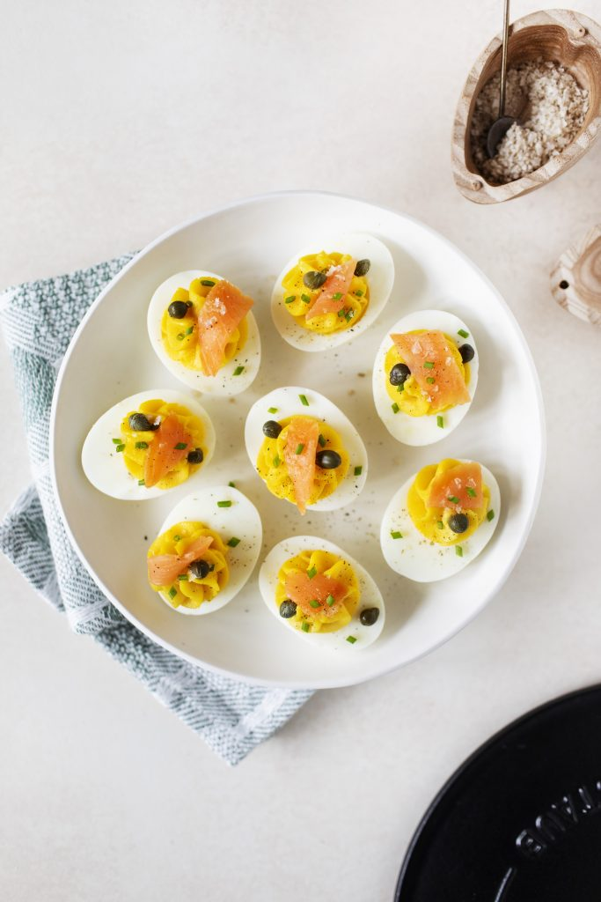

Pancake

Oeufs Mimosa also known as Devilled Eggs are a wonderful appetizer to celebrate the arrival of spring! This version is topped with smoked salmon & capers for a twist on a classic dijon devilled egg.
Ingredients
- 12 large eggs
- 1/2 cup quality mayonnaise
- 2 tablespoons dijon mustard
- 11 tablespoon lemon juice, freshly squeezed
- Salt & pepper, to taste
- Smoked salmon, to garnish
- Thinly sliced chives, to garnish
- Capers, to garnish
- Smoked flaked salt, to garnish
Step
- Fill a large pot with cold water & add the eggs. Bring to a boil & remove from heat. Cover with lid & let stand for 10 minutes. Immediately strain into an ice bath.
- Peel the eggs & cut in half to expose the yolk. Transfer the yolks to a small mixing bowl (use a food processor if piping) & transfer the whites to a serving plate.
- To the yolks add the mayonnaise, mustard, lemon juice, salt & pepper. Mix until smooth.
- Spoon (or pipe) filling back into the egg whites. Top with smoked salmon, chives & a pinch of flaked salt.